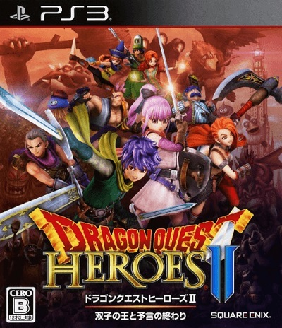

Dragon Quest Heroes II: Futago no Ou to Yogen no Owari
ドラゴンクエストヒーローズⅡ 双子の王と予言の終わり

Год выпуска: 2016
Жанр: Hack and Slash / Action / Role-Playing Game
Разработчик: Omega Force
Издательство: Square Enix
Язык Интерфейса: Японский
Язык Озвучки: Японский
Язык Субтитров: Японский
Код диска: BLJM61341
Формат: pkg
Описание:
Dragon Quest Heroes II - это игра на стыке жанров «hack-and-slash» и «Action RPG». Игрокам предстоит отправиться навстречу удивительному приключению и грандиозным сражениям, чтобы вернуть покой в когда-то безмятежный мир, который заполонили орды монстров. До четырех игроков смогут объединить свои силы в совместном многопользовательском режиме для победы над полчищами врагов и сложными боссами. На выбор - самые разные персонажи с уникальными приемами и способностями (уже знакомые по серии «Dragon Quest» и 4 новых), которые должны объединиться и справиться с угрозой, нависшей над Семью королевствами!
Давно-давно мир пережил долгую изнурительную войну. Когда же она, наконец, закончилась, народы заключили торжественный договор о том, что они никогда больше не будут не воевать. Мир был разделен на семь королевств и тысячу лет о войне никто не вспоминал.
Однажды двоюродные брат и сестра - будущие рыцари Лазарель и Тереза - встретились в королевстве Харба вдали от своей родной Дунисии. Они и подумать не могли, что армия Дунисии вот-вот начнет вторжение, а возглавит ее их старый друг принц Цезарь.
Столь долгий мир был нарушен, и королевства погрузились в хаос. С помощью посланника Высшего короля героям необходимо отправиться в Аккордию на встречу с верховным сюзереном Семи королевств и найти способ снова примирить страну!